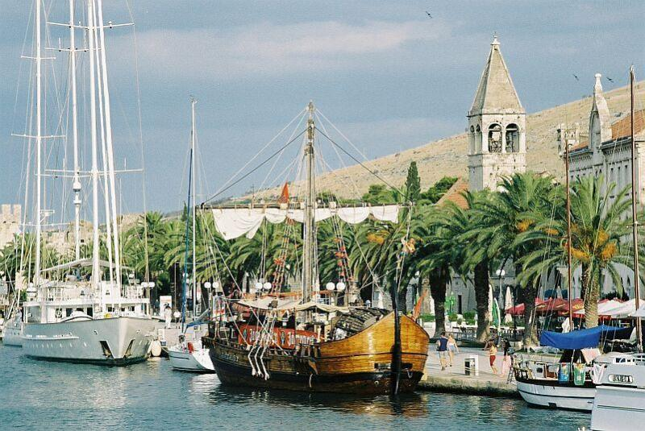

The Faculty of Natural Sciences and Mathematics of the University of Split and Faculty of Textile Technology of the University of Zagreb are pleased to announce the conference Mathematical Inequalities and Applications 2014 ONE THOUSAND PAPERS. This conference is organized in honour of Professor Josip Pečarić on the occasion of publishing more than 1000 mathematical scientific papers.
The Conference is planned for June 22-26, 2014, and will be held in Trogir, Croatia.
The aim of the Conference is the exchange of recent developments, ideas and problems in all areas of pure and applied mathematics, provided they are concerned with mathematical inequalities and their various applications.
The program includes plenary lectures (45 min) and short communications (20 min).
The official language of the Conference is English.
|  |
|---|
| Trogir - waterfront |